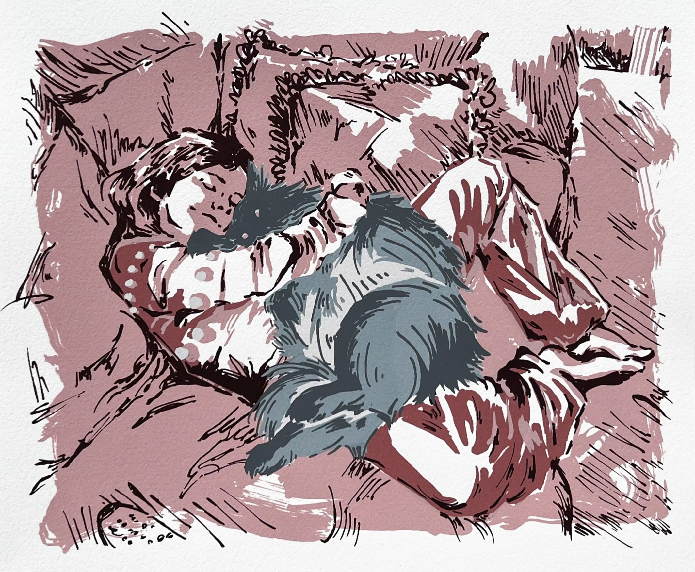

Artist Statement
Chris's artworks aim to express vulnerability and capture fleeting moments, often incorporating childhood photos, nature, and self-portraits. They blend photographs, line art, landscapes, and abstract floral forms to convey the preciousness of time, using flowers to symbolize complex ideas about memories and mental health. Their painting style alternates between hyperrealism and abstract naturalism. They employ techniques that involve painting over manipulated photographs or experimenting with textures and linework in traditional mediums. This duality allows the artist to express emotions about their past through their variety of artworks.
More Info About Chris